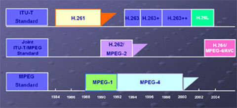
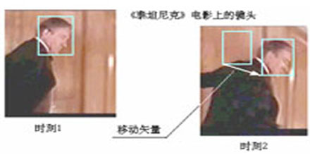
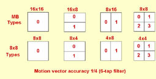
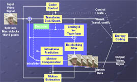

视频压缩与传输技术
-
视频压缩的必要性
1)VCD (352x288x25FPS): 45分钟的数据量约为10GB, 需要26.5:1的压缩； 2)DVD (720x480x30FPS): 2小时的数据量约为100GB, 通常需要15:1的压缩； 3)高清节目广播 (1920x1080x30FPS): 通讯带宽24Mbps(未来希望两路), 需要30:1(60:1)的压缩； 4)手机视频聊天 (320x240x15FPS): 单向带宽<128Kbps, 需要>100:1的压缩。
视频压缩标准的历史进化
1)MOTION-JPEG (主要用于视频编辑系统)； 2)H.261/H.263 (早期通讯系统)； 3)MPEG-1 (VCD)； 4)MPEG-2 (DVD,数字电视等)：广泛使用的工业标准； 5)MPEG-4 (DivX, rm…)： 网络广泛流传的视频格式； 6)H.264/AVC (MPEG-4 PART10)：下一代高清DVD/广播、MOBILE通讯, WHITE HOT； 7)WMV-9：微软标准, H.264的竞争对手, 估计会统治PC世界； 8)AVS：中国数字广播标准； 9)SVC (Scalable Video Coding)：H.264后续分层编码标准。

视频编码标准的发展
-
视频压缩原理
运动估算与补偿预测
基于块的视频编码技术，假定图像块的运动是平移，即认为当前帧中某块是由参考帧中的某块按照水平和垂直方向的平移而得到的，这个平移的距离和方向称为运动向量。
从参考帧中查找与当前编码块的最佳匹配块的过程称为运动估算。估算的前提是假设两帧图像块在时间和空间上没有光线的变化，即对应像素亮度和颜色是一致的。

块尺寸的划分和选择
传统标准的块尺寸为：16×16像素
H.264将块尺寸分为：7种。

-
H.264/AVC介绍
JVT（Joint Video Team，视频联合工作组）于2001年12月在泰国Pattaya成立。它由ITU-T和ISO两个国际标准化组织的有关视频编码的专家联合组成。JVT的工作目标是制定一个新的视频编码标准，以实现视频的高压缩比、高图像质量、良好的网络适应性等目标。目前JVT的工作已被ITU-T接纳，新的视频压缩编码标准称为H.264标准，该标准也被ISO接纳，称为AVC（Advanced Video Coding）标准，是MPEG-4的第10部分。
-
H.264/AVC的技术特征
1)分层设计
H.264的算法在概念上可以分为两层：视频编码层（VCL：Video Coding Layer）负责高效的视频内容表示，网络提取层（NAL：Network Abstraction Layer）负责以网络所要求的恰当的方式对数据进行打包和传送。在VCL和NAL之间定义了一个基于分组方式的接口，打包和相应的信令属于NAL的一部分。这样，高编码效率和网络友好性的任务分别由VCL和NAL来完成。 2)高精度、多模式运动估计
H.264支持1/4或1/8像素精度的运动矢量。在1/4像素精度时可使用6抽头滤波器来减少高频噪声，对于1/8像素精度的运动矢量，可使用更为复杂的8抽头的滤波器。在进行运动估计时，编码器还可选择"增强"内插滤波器来提高预测的效果。
在H.264的运动预测中，一个宏块（MB）可以按图2被分为不同的子块，形成7种不同模式的块尺寸。这种多模式的灵活和细致的划分，更切合图像中实际运动物体的形状，大大提高了运动估计的精确程度。
在H.264中，允许编码器使用多于一帧的先前帧用于运动估计，这就是所谓的多帧参考技术。
3)4×4块的整数变换
H.264与先前的标准相似，对残差采用基于块的变换编码，但变换是整数操作而不是实数运算，其过程和DCT基本相似。这种方法的优点在于：在编码器中和解码器中允许精度相同的变换和反变换，便于使用简单的定点运算方式。 4) 统一的VLC
H.264中熵编码有两种方法，一种是对所有的待编码的符号采用统一的VLC（UVLC ：Universal VLC），另一种是采用内容自适应的二进制算术编码（CABAC：Context-Adaptive Binary Arithmetic Coding）。 5)帧内预测
在先前的H.26x系列和MPEG-x系列标准中，都是采用的帧间预测的方式。在H.264中，当编码Intra图像时可用帧内预测。它不是在时间上，而是在空间域上进行的预测编码算法，可以除去相邻块之间的空间冗余度，取得更为有效的压缩。 6)面向IP和无线环境
H.264草案中包含了用于差错消除的工具，便于压缩视频在误码、丢包多发环境中传输，如移动信道或IP信道中传输的健壮性。
-
H.264/AVC的应用
1)视频移动通信; 2)视频流信息服务； 3)数字电视广播与存储；